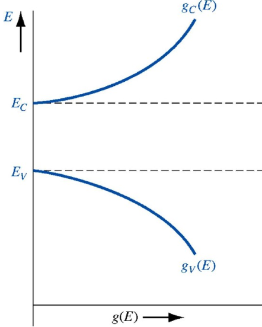
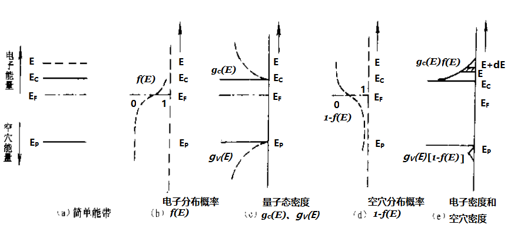
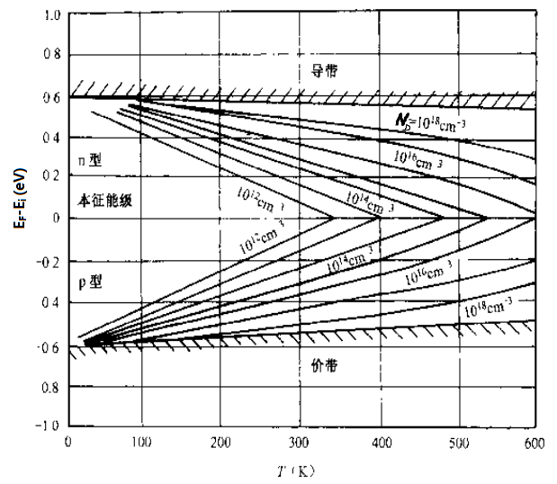

为了计算载流子浓度，需要了解两方面：（1）晶体中的允许的量子态如何分布；（2）电子在量子态中的分布；
假设晶体中能带（能带内可以视为连续的能级）中的能量间隔$E$~$(E+dE)$之间有$dZ$个量子态，则其状态密度$g(E)$为： $$g(E)=\displaystyle\frac{dZ}{dE} \tag{3-1}$$
由于$E$是波矢$k$的函数，需要了解$k$空间中的量子态分布，从而求出其状态密度$g(E)$。
对于晶体而言，$k$必须满足以下的条件： $$ \left . \begin{align*} k_x &= \displaystyle\frac{2\pi n_x}{L}, n_x=0,\pm1,\pm2,... \\ k_y &= \displaystyle\frac{2\pi n_y}{L}, n_y=0,\pm1,\pm2,... \\ k_z &= \displaystyle\frac{2\pi n_z}{L}, n_z=0,\pm1,\pm2,... \\ \end{align*} \right \} \tag{1-18} $$，其中，$n_x,n_y,n_z$是整数，$L$是半导体晶体的线度，$L^3=V$是晶体的体积。
$(n_x, n_y, n_z)$决定了不同的$k$点，每一个点对应一个能量态：$E(k)=E(0)+\frac{\hbar^2k^2}{2m^*}$。
对于$V=L^3$的体积的晶体，由于每一个小格立方的体积是$V_0 = \left(\frac{2\pi}{L}\right)^3$，每一小格是$8$个格点（对应$8$个$k$，也就是$8$个能量态）,但和周围$8$个其他小格共享，所以平均每个小格的能量态是$1$, 所以$k$空间的能量态密度 $=\frac{1}{V_0}=\frac{V}{8\pi^3}$，而量子态密度 = $\frac{2V}{8\pi^3}$。
首先，计算导带底部的能带密度，考虑能带极值在$k=0$，等能面为球面，则 $$ E(k)=E_c+\displaystyle\frac{\hbar^2k^2}{2m_n^*} \tag{3-2} $$， 其中$m_n^*$是导带底部电子有效质量，$E_c=E(0)$是导带底部的基准能级。
设在$k$ ~ $(k+\mathrm{d}k)$的半径范围内的球壳间的体积为： $\displaystyle\frac{4\pi (k+\mathrm{d}k)^3}{3}-\displaystyle\frac{4\pi k^3}{3}=\displaystyle\frac{4\pi}{3}(\mathrm{d}k^3+3\mathrm{d}k^2k+3\mathrm{d}kk^2+k^3-k^3)$ $\approx$ $\displaystyle\frac{4\pi}{3}(3\mathrm{d}kk^2)=4\pi k^2\mathrm{d}k$。
而上面已知，量子态密度是：$\displaystyle\frac{2V}{8\pi^3}$，所以 量子态数： $$ \mathrm{d}Z = \displaystyle\frac{2V}{8\pi^3} \cdot 4\pi k^2\mathrm{d}k \tag{3-3}$$
由 $E(k)=E_c+\displaystyle\frac{\hbar^2k^2}{2m_n^*}$ 可以得到： $$ \left\{ \begin{align*} k &= \displaystyle\frac{\sqrt{2m_n^*(E-E_c)}}{\hbar} \\ \mathrm{d}k &=\displaystyle\frac{\sqrt{2m_n^*(E-E_c)}}{2\hbar^2(E-E_c)}\mathrm{d}E \\ k\mathrm{d}k &=\displaystyle\frac{m_n^*}{\hbar^2}\mathrm{d}E \end{align*} \right. $$
代入(3-3)，得到量子态数: $\mathrm{d}Z = \displaystyle\frac{2V}{8\pi^3} \cdot 4\pi k^2\mathrm{d}k$ 得到： $$ \mathrm{d}Z = \displaystyle\frac{V}{2\pi^2} \cdot \displaystyle\frac{(2m_n^*)^{3/2}}{\hbar^3} \cdot \sqrt{E-E_c}\mathrm{d}E \tag{3-4} $$
由(3-1)得到导带底部的状态密度： $$ g_c(E)=\displaystyle\frac{\mathrm{d}Z}{\mathrm{d}E}=\displaystyle\frac{V}{2\pi^2} \cdot \displaystyle\frac{(2m_n^*)^{3/2}}{\hbar^3} \cdot \sqrt{E-E_c} \tag{3-5} $$
导带底部的状态密度： $$ g_c(E)=\displaystyle\frac{\mathrm{d}Z}{\mathrm{d}E}=\displaystyle\frac{V}{2\pi^2} \cdot \displaystyle\frac{(2m_n^*)^{3/2}}{\hbar^3} \cdot \sqrt{E-E_c} \tag{3-5} $$，对于硅：$m_n^*=1.062m_0$，对锗：$m_n^*=0.56m_0$。
由（3-5）可以看到，随着$E$的增加，$g_c$以抛物线关系增加。
同理，价带顶部的状态密度为： $$ g_{_V}(E)=\displaystyle\frac{\mathrm{d}Z}{\mathrm{d}E}=\displaystyle\frac{V}{2\pi^2} \cdot \displaystyle\frac{(2m_p^*)^{3/2}}{\hbar^3} \cdot \sqrt{E_V-E} \tag{3-8} $$，式中 $E_V$ 为价带顶部的基态能级。对于硅：$m_p^*=0.59m_0$，对锗：$m_p^*=0.29m_0$。
对于晶体中的电子，其分布服从费米统计规律，对于能量$E$的一个量子态，其被电子占据的概率$f(E)$满足： $$ f(E)=\displaystyle\frac{1}{1+\exp\left(\displaystyle\frac{E-E_F}{k_0T}\right)} \tag{3-10} $$，其中$k_0$为玻尔兹曼常数，$T$为热力学温度（绝对温度）。
式中$E_F$称为费米能级，或费米能量，它和温度、半导体材料的导电类型、杂质的含量、能量零点的选取有关。
处于热平衡状态下的系统，有统一的$E_F$。
对于能量$E$的一个量子态，其被电子占据的概率$f(E)$满足： $$ f(E)=\displaystyle\frac{1}{1+\exp\left(\displaystyle\frac{E-E_F}{k_0T}\right)} \tag{3-10} $$， 其中$k_0$为玻尔兹曼常数，$T$为热力学温度（绝对温度）。
对于上面的(3-10)，可以看到，当$T=0K$时，有： $$ \begin{align*} f(E) &= 1, 当 E \lt E_F \\ f(E) &= 0, 当 E \gt E_F \end{align*} $$
当$T \gt 0K$时，有： $$ \begin{align*} f(E) > \frac{1}{2}, 当 E \lt E_F \\ f(E) < \frac{1}{2}, 当 E \gt E_F \\ f(E) = \frac{1}{2}, 当 E = E_F \end{align*} $$
$E_F$标志了电子填充能级的水平。
在费米分布函数：$f(E)=\displaystyle\frac{1}{1+\exp\left(\displaystyle\frac{E-E_F}{k_0T}\right)}$ 中当 $E-E_F \gg k_0T $ 时，由于 $\exp\left( \displaystyle\frac{E-E_F}{k_0T}\right) \gg 1$，所以：$1+\exp\left(\displaystyle\frac{E-E_F}{k_0T}\right) \approx \exp\left(\displaystyle\frac{E-E_F}{k_0T}\right)$
所以，$f(E) \approx f_B(E)=\exp\left(-\displaystyle\frac{E-E_F}{k_0T}\right)=$ $\exp\left(\displaystyle\frac{E_F}{k_0T}\right)\cdot\exp\left(\displaystyle\frac{-E}{k_0T}\right)=A\exp\left(\displaystyle\frac{-E}{k_0T}\right)$
这即为玻尔兹曼统计分布函数。
注意，当$E-E_F \gg k_0T$时，这两种统计的结果接近，这是玻尔兹曼统计分布函数适用的范围。
电子的玻尔兹曼统计分布函数：$f(E)=\displaystyle\frac{1}{1+\exp\left(\displaystyle\frac{E-E_F}{k_0T}\right)}$
由于$f(E)$是电子占据量子态的概率，则$1-f(E)$是电子没有占据量子态的概率，如果在价带里，则这就是空穴占据量子态的概率，$1-f(E) =\displaystyle\frac{1+\exp\left(\displaystyle\frac{E-E_F}{k_0T}\right)-1}{1+\exp\left(\displaystyle\frac{E-E_F}{k_0T}\right)}=\displaystyle\frac{\exp\left(\displaystyle\frac{E-E_F}{k_0T}\right)}{1+\exp\left(\displaystyle\frac{E-E_F}{k_0T}\right)}=$ $\displaystyle\frac{1}{1+\exp\left(\displaystyle\frac{-E+E_F}{k_0T}\right)} \approx \displaystyle\frac{1}{\exp\left(\displaystyle\frac{-E+E_F}{k_0T}\right)} =$ $\exp\left(\displaystyle\frac{-E_F}{k_0T}\right)\cdot\exp\left(\displaystyle\frac{E}{k_0T}\right)=B\exp\left(\displaystyle\frac{E}{k_0T}\right)$
这即为空穴的玻尔兹曼统计分布函数。
在半导体中最常遇到的，是$E_F$位于禁带中，而且与导带和价带的距离大于$k_0T$，所以，对于导带中所有量子态，其被电子占据的概率 $f(E) \ll 1$，这适合玻尔兹曼统计分布函数，价带中的空穴也是如此。
把适合玻尔兹曼统计分布函数的电子系统称为非简并性系统，而仅服从费米统计规律的电子系统，称为简并系统。
下图是能带、电子分布函数$f(E)$、空穴分布函数$1-f(E)$、导带量子态密度$g_{_c}(E)$、价带量子态密度$g_{_V}(E)$、导带电子密度$f(E)\cdot g_{_C}(E)$、价带空穴密度$(1-f(E))\cdot g_{_V}(E)$的曲线，注意，这里的密度，是相对能级的密度。
由此，得到$\mathrm{d}E$范围内的导带电子数目为: $g_{_C}(E)\cdot f(E)\mathrm{d}E$，将其进行积分，得到整个晶体中整个导带的全部电子数目，再除以体积，即可得到导带电子浓度，同样可得到价带空穴浓度$g_{_V}(E)\cdot \left[1-f(E)\right]\mathrm{d}E$。
下面简单计算非简并系统（玻尔兹曼统计分布函数）下的电子浓度和空穴浓度：
【1】在$E$~$\mathrm{d}E$范围内的导带电子数目$\mathrm{d}N = f_B(E)\cdot g_{_C}(E)\mathrm{d}E$
【2】由于： $g_{_C}(E)=\displaystyle\frac{\mathrm{d}Z}{\mathrm{d}E}=\displaystyle\frac{V}{2\pi^2} \cdot \displaystyle\frac{(2m_n^*)^{3/2}}{\hbar^3} \cdot \sqrt{E-E_c}$ $f_{_B}(E)=\exp\left(\displaystyle\frac{E_F}{k_0T}\right)\cdot\exp\left(\displaystyle\frac{-E}{k_0T}\right)$，所以：$\mathrm{d}N = \displaystyle\frac{V}{2\pi^2} \cdot \displaystyle\frac{(2m_n^*)^{3/2}}{\hbar^3} \cdot \sqrt{E-E_c} \cdot \exp\left(\displaystyle\frac{E_F}{k_0T}\right)\cdot\exp\left(\displaystyle\frac{-E}{k_0T}\right)\mathrm{d}E$
【3】由此得到，导带中的电子浓度： $$ n_0=\displaystyle\frac{1}{V}\int_{E_C}^{E_C'}\displaystyle\frac{V}{2\pi^2} \cdot \displaystyle\frac{(2m_n^*)^{3/2}}{\hbar^3} \cdot \sqrt{E-E_c} \cdot \exp\left(\displaystyle\frac{E_F}{k_0T}\right)\cdot\exp\left(\displaystyle\frac{-E}{k_0T}\right)\mathrm{d}E $$
【4】引入变数$x=\frac{E-E_{_C}}{k_0T}$，且$x'=\frac{E_{_C}'-E_{_C}}{k_0T} \to \infty$，则 $$ n_0=\displaystyle\frac{1}{2\pi^2}\displaystyle\frac{(2m_n^*k_0T)^{3/2}}{\hbar^3}\exp\left(-\displaystyle\frac{E_{_C}-E_{_F}}{k_0T}\right)\int_0^{\infty}\sqrt{x}e^{-x}\mathrm{d}x \tag{3-16} $$
【5】$$n_0=\displaystyle\frac{1}{2\pi^2}\displaystyle\frac{(2m_n^*k_0T)^{3/2}}{\hbar^3}\exp\left(-\displaystyle\frac{E_{_C}-E_{_F}}{k_0T}\right)\int_0^{\infty}\sqrt{x}e^{-x}\mathrm{d}x \tag{3-16} $$，由于$\displaystyle\int_0^{\infty}\sqrt{x}e^{-x}\mathrm{d}x = \displaystyle\frac{\sqrt{\pi}}{2}$，所以，(3-16)可以得到： $$ n_0 = N_C\cdot f(E_C) \tag{3-19} $$
其中，$N_C$称为导带的有效状态密度，其定义为： $$ N_C = 2 \displaystyle\frac{(2\pi m_n^*k_0T)^{3/2}}{h^3} $$
以及，$f(E_C)$称为电子占据$E_C$能级的量子态的概率，其定义为： $$ f(E_C)=\exp\left(-\displaystyle\frac{E_{_C}-E_{_F}}{k_0T}\right) $$
【6】（3-19）可以理解为，把导带所有量子态都集中在导带底$E_C$，它的量子态密度是$N_C$，电子出现在每个量子态的概率是$f(E_C)$，那么$n_0=N_C\cdot f(E_C)$即为导带中的电子浓度。
【7】同样的，可以求出价带中的空穴浓度: $$ p_0 = N_V \cdot f(E_V) \tag{3-24} $$
其中，$N_V = 2 \displaystyle\frac{(2\pi m_p^*k_0T)^{3/2}}{h^3}$ 是价带的有效量子态密度。
以及，$f(E_V)$称为空穴占据$E_V$能级的量子态的概率，其定义为： $$ f(E_V)=\exp\left(\displaystyle\frac{E_{_V}-E_{_F}}{k_0T}\right) $$
【8】式(3-24)可以理解为：把价带所有量子态都集中在价带顶$E_V$，它的量子态密度是$N_V$，空穴出现在每个量子态的概率是$f(E_V)$，那么$p_0=N_V\cdot f(E_V)$即为导带中的电子浓度。
$$ n_0p_0=N_CN_V\exp\left(-\displaystyle\frac{E_C-E_V}{k_0T}\right)=N_CN_V\exp\left(-\displaystyle\frac{E_g}{k_0T}\right) $$
可见，在温度$T$恒定，没有其他外界影响的热平衡状态下，$n_0p_0$ 是一个常数，这也是热平衡状态的判定条件。
同时，也可见，在温度$T$恒定，没有其他外界影响的热平衡状态下，$n_0p_0$ 是一个常数，电子浓度上升，空穴浓度就会下降，反之亦然，这个只和温度有关，和杂质浓度无关。
本征半导体：没有杂质和缺陷的半导体。
绝对零度下，本征半导体价带全部量子态都有电子占据，导带没有电子，当温度上升，价带的电子获得足够能量跃迁到导带，即生成导带的电子和价带的空穴，这就是本征激发。
本征激发下，导体电子浓度$n_0$和价带空穴浓度$p_0$相等：$n_0=p_0$
这就是本征半导体的电中性条件。
$$ n_i=n_0=p_0=\sqrt{\left( N_C N_V \right)}/\exp\left(\frac{E_g}{2k_0T}\right) \tag{3-31} $$
可见，随着温度升高，$n_i$也会上升，同一温度下，$E_g$越大，$n_i$越小。
$$ n_i^2=n_0p_0 \tag{3-32} $$
施主能量$E$的一个量子态，其被电子占据的概率$f(E)$满足： $$ f_D(E)=\displaystyle\frac{1}{1+\frac{1}{g_D}\exp\left(\displaystyle\frac{E_D-E_F}{k_0T}\right)} \tag{3-35} $$，式中，$g_D$是施主能级的基态简并度，半导体：$g_D=2$
对于施主杂质浓度为$N_D$，其施主能级的电子浓度： $$ n_D=N_Df_D(E)=\displaystyle\frac{N_D}{1+\frac{1}{g_D}\exp\left(\displaystyle\frac{E_D-E_F}{k_0T}\right)} \tag{3-37} $$
由此，得到电离施主浓度： $$ n_D^+=N_D-n_D=\displaystyle\frac{N_D}{1+g_D/\exp\left(\displaystyle\frac{E_D-E_F}{k_0T}\right)} \tag{3-39} $$
当$E_D-E_F \gg k_0T$时，$n_D^+ \approx N_D$，也就是完全电离。
受主能量$E$的一个量子态，其被空穴占据的概率$f(E)$满足： $$ f_A(E)=\displaystyle\frac{1}{1+\frac{1}{g_A}\exp\left(\displaystyle\frac{E_F-E_A}{k_0T}\right)} \tag{3-36} $$，式中，$g_A$是受主能级的基态简并度，半导体：$g_A=2$
对于受主杂质浓度为$N_A$，其受主能级的电子浓度： $$ p_D=N_Af_A(E)=\displaystyle\frac{N_A}{1+\frac{1}{g_A}\exp\left(\displaystyle\frac{E_F-E_A}{k_0T}\right)} \tag{3-38} $$
由此，得到电离受主浓度： $$ p_A^-=N_A-p_A=\displaystyle\frac{N_A}{1+g_A/\exp\left(\displaystyle\frac{E_F-E_A}{k_0T}\right)} \tag{3-40} $$
当$E_F-E_A \gg k_0T$时，$p_D^- \approx N_A$，也就是完全电离。
仅考虑只有一种施主杂质，电子浓度($n_{_0}$)为负性，正性电荷由两部分组成，一个是施主电离后剩下的正电中心浓度($n_{_D}^+$)，一个是空穴浓度($p_{_0}$)，由电中性条件, 正负相等：$n_{_0}=n_{_D}^++p_{_0}$
$n_{_0} = \displaystyle\frac{N_{_C}}{\exp\left(\displaystyle\frac{E_{_C}-E_{_F}}{k_0T}\right)}$，$ p_{_0} = \displaystyle\frac{N_{_V}}{\exp\left(\displaystyle\frac{E_{_F}-E_{_V}}{k_0T}\right)}$，$n_{_D}^+= \displaystyle\frac{N_{_D}}{1+2\exp\left(\displaystyle\frac{E_{_F}-E_{_D}}{k_0T}\right)}$ 代入得到： $$ \displaystyle\frac{N_{_C}}{\exp\left(\displaystyle\frac{E_{_C}-E_{_F}}{k_0T}\right)}=\displaystyle\frac{N_{_V}}{\exp\left(\displaystyle\frac{E_{_F}-E_{_V}}{k_0T}\right)}+\displaystyle\frac{N_{_D}}{1+2\exp\left(\displaystyle\frac{E_{_F}-E_{_D}}{k_0T}\right)} \tag{3-42} $$
此时，本征激发可以不考虑，施主电离也很少，$p_{_0}=0, n_{_0}=n_{_D}^+$： $$ \displaystyle\frac{N_{_C}}{\exp\left(\displaystyle\frac{E_{_C}-E_{_F}}{k_0T}\right)}=\displaystyle\frac{N_{_D}}{1+2\exp\left(\displaystyle\frac{E_{_F}-E_{_D}}{k_0T}\right)} \tag{3-43} $$
因为 $$ E_{_F}=\frac{E_C+E_D}{2}+\frac{k_0T}{2}\mathrm{ln}(\frac{N_D}{2N_C}) $$
代入并化简，得到此时电子浓度： $$ n_{_0}=\sqrt{\frac{N_{_D}N_{_C}}{2}}\exp\left(-\frac{E_{_C}-E_{_D}}{2k_0T}\right) \tag{3-46a} $$，式中，$N_{_D}$是杂质浓度，$N_{_C}=2 \displaystyle\frac{(2\pi m_{_n}^*k_0T)^{3/2}}{h^3}$是导带有效密度。
由上面，初始时，$N_{_C}$比较小，$N_{_C} \lt N_{_D}，E_{_F}$也是逐渐上升，标志着导带电子浓度一直上升, 当$N_{_C}=0.11N_{_D}$时，$E_{_F}$达到最大值。
此时，本征激发依旧可以不考虑，施主电离增加，由于：$N_{_C}=2 \displaystyle\frac{(2\pi m_{_n}^*k_0T)^{3/2}}{h^3}$，当$T$上升，$N_{_C}$上升，当$2N_{_C} \gt N_{_D} $时，$E_{_F}=\frac{E_{_C}+E_{_D}}{2}+\frac{k_0T}{2}\mathrm{ln}(\frac{N_{_D}}{2N_{_C}})$ 中第二项为负值，表明此时$E_F$下降(下降是进入中间电离区的标志)：
此时电子浓度和上面一样： $$ n_{_0}=n_{_D}^+=\displaystyle\frac{N_{_D}}{1+2\exp\left(\displaystyle\frac{E_{_F}-E_{_D}}{k_0T}\right)} $$，式中，$N_D$是杂质浓度，$N_C$是导带有效密度。 当$E_{_F}=E_{_D}$，则$n_0=\frac{N_{_D}}{3}$，表示此时有$\frac{1}{3}$的杂质电离。
进入此区的条件，此时杂质几乎完全电离，此时 $n_0=n_{_D}^+ \approx N_D$，此时 由于：$n_{_D}^+= \displaystyle\frac{N_{_D}}{1+2\exp\left(\displaystyle\frac{E_{_F}-E_{_D}}{k_0T}\right)} = N_D$，也就是$\exp\left(\displaystyle\frac{E_{_F}-E_{_D}}{k_0T}\right) \to 0$，也就是： $E_{_F}-E_{_D} \ll k_0T$ ，也就是$E_{_F} \lt E_{_D}$
由上面电中性条件：$\displaystyle\frac{N_{_C}}{\exp\left(\displaystyle\frac{E_{_C}-E_{_F}}{k_0T}\right)}=\displaystyle\frac{N_{_V}}{\exp\left(\displaystyle\frac{E_{_F}-E_{_V}}{k_0T}\right)}+\displaystyle\frac{N_{_D}}{1+2\exp\left(\displaystyle\frac{E_{_F}-E_{_D}}{k_0T}\right)}$，强电离下，不考虑本征激发，假设完全电离(电离超过90%)，得到：
$N_{_C}\exp\left(-\displaystyle\frac{E_{_C}-E_{_F}}{k_0T}\right)=N_{_D}$，解出 $E_{_F}=E_{_C}+k_0T\mathrm{ln}\left(\frac{N_D}{N_C}\right)$
从下图可见，当$N_D$不变，温度T上升，$E_F$逐渐接近本征能级$E_i$（也就是禁带中线$E_i=\frac{E_C-E_V}{2}$）
当温度T不变，随着$N_D$上升，$E_F$逐渐接近$E_C$。
未电离的杂质浓度$n_{_D}$： $$ n_{_D}=D_-\cdot N_{_D} , \\ D_-=\left(\displaystyle\frac{2N_{_D}}{N_{_C}}\right)\exp\left(\displaystyle\frac{E_{_C}-E_{_D}}{k_0T}\right) \tag{3-53} $$
其中，$D_-$为未电离的杂质浓度($n_{_D}$)占总杂质浓度($N_{_D}$)的百分比，可见$D_-$与温度$T$、杂质浓度$N_{_D}$和杂质电离能$\Delta E_{_D}=E_{_C}-E_{_D}$有关。
也可以利用下式来估算全电离时需要的温度： $$ \displaystyle\frac{\Delta E_{_D}}{k_0}\cdot\displaystyle\frac{1}{T}=\displaystyle\frac{3}{2}\mathrm{ln}T+\mathrm{ln}\left[\displaystyle\frac{D_-}{N_{_D}}\cdot\displaystyle\frac{\left(2\pi k_0 m_n^*\right)^{3/2}}{h^3}\right] \tag{3-53} $$
解：由： $$ n_{_D}=D_-\cdot N_{_D} , \\ D_-=\left(\displaystyle\frac{2N_{_D}}{N_{_C}}\right)\exp\left(\displaystyle\frac{\Delta E_{_D}}{k_0T}\right) $$，可以得到： $$\begin{align*} N_{_D} &=\left(\displaystyle\frac{D_-N_{_C}}{2}\right)\exp\left(-\displaystyle\frac{\Delta E_{_D}}{k_0T}\right) \\ &=\left(\displaystyle\frac{0.1\times 2.8\times 10^{19}}{2}\right)\exp\left(-\displaystyle\frac{0.044}{0.026}\right) \\ &\approx 3\times 10^{17}/cm^3 \end{align*} $$
此时，电离杂质的浓度=$N_{_D}\cdot 90\% = 3\times 10^{17}\times 0.9=2.7\times 10^{17}/cm^3$
解：由3-54，令 $f(T)=\displaystyle\frac{\Delta E_{_D}}{k_0}\cdot\displaystyle\frac{1}{T}-\displaystyle\frac{3}{2}\mathrm{ln}T-\mathrm{ln}\left[\displaystyle\frac{D_-}{N_{_D}}\cdot\displaystyle\frac{\left(2\pi k_0 m_n^*\right)^{3/2}}{h^3}\right]$，由于：
$f(10)=50.05423$，$f(200)=-2.96371$，可见完全电离的温度在此之间，用二分迭代求出：$T=110.406053K$时，$f(T)\to 0$，可见，在0℃以下，已经完全电离。
当半导体处于完全电离区和完全本征激发区之间，称为过渡区，特征是本征激发的载流子浓度（包括两种载流子）和完全电离的载流子浓度在相近数量级。
其电中性条件和热平衡条件，可以得到联合方程组： $$ \left\{ \begin{align*} n_0 &=N_D+p_0 \\ n_0p_0 &=n_i^2 \end{align*} \right. $$
求出其解为： $$ \left\{ \begin{align*} n_0 &=\frac{N_D+\sqrt{N_D^2+4n_i^2}}{2} \\ p_0 &=\frac{n_i^2}{n_0} \end{align*} \right. $$
解：前面已经计算过，硅达到完全电离所需的温度不高于0℃，室温下完全电离，所以需要判断的是处于：强电离区、过渡区，还是高温本征激发区，主要依据是:
下面先计算电子浓度和空穴浓度: $$ \left\{ \begin{align*} n_0 &=\frac{N_D+\sqrt{N_D^2+4n_i^2}}{2} =\frac{10^{16}+\sqrt{(10^{16})^2+4(1.02\times10^{10})^2}}{2} =1\times10^{16}/cm^3 \\ p_0 &=\frac{n_i^2}{n_0} = \frac{(1.02\times10^{10})^2}{1\times10^{16}} = 1.04\times10^4/cm^3 \end{align*} \right. $$
所以这是处于过渡区。
若电子和空穴浓度都远高于杂质浓度至少一个数量级，则处于高温本征激发区
其电子和空穴浓度： $$ n_0=p_0=n_i $$
相同杂质下，温度越高，载流子浓度越高，但不是线性；
室温下，杂质浓度离本征载流子浓度越远，越呈现载流子浓度的分化，其中，占多数的载流子称为多数载流子，多子，占少数的称为少数载流子，少子，比如n-型半导体的多子是导带的电子，少子是空穴。
解：【1】先估算完全电离(90%)所需要的温度$T$：从课本P43页图2-8可以查得硅掺杂砷的杂质电离能$\Delta E_D = 0.054eV$，$D_-=0.1$，$N_D=10^{15}/cm^3$，查课本 P66页 表3-2 得 $m_n^*=1.062m_0$, $k_0=1.38\times10^{-23}J/K$，$h=6.625\times10^{-34}J\cdot S$
由课本P72页，（3-54），令 $f(T)=\displaystyle\frac{\Delta E_{_D}}{k_0}\cdot\displaystyle\frac{1}{T}-\displaystyle\frac{3}{2}\mathrm{ln}T-\mathrm{ln}\left[\displaystyle\frac{D_-}{N_{_D}}\cdot\displaystyle\frac{\left(2\pi k_0 m_n^*\right)^{3/2}}{h^3}\right]$，由于$f(10)=60.56431, f(200)=-3.48189$，可见完全电离的温度在此之间，用二分迭代求根得$T=109.68494 K$，可见，77K还未完全电离，而300K、500K、800K都已完全电离。
【2】77K下未完全电离，由P63页，公式（3-18）： $$ \begin{align*} N_{_C} &=2 \displaystyle\frac{(2\pi m_{_n}^*k_0T)^{3/2}}{h^3} \\ &=2 \displaystyle\frac{(2\pi\times 1.602\times 9.108\times 10^{-31} \times 1.38\times 10^{-23}\times 77)^{3/2}}{(6.625\times 10^{-34})^3\times 10^6} /cm^3 \\ &=6.613406 \times 10^{18} /cm^3 \end{align*} $$
由P70页，公式（3-46）： $$ \begin{align*} n_{_0} &=\sqrt{\frac{N_{_D}N_{_C}}{2}}\exp\left(-\frac{\Delta E_D}{2k_0T}\right) \\ &= \sqrt{\frac{10^{15}\times 6.613406 \times 10^{18}}{2}}\exp\left(-\frac{0.054\times 1.602\times 10^{-19}}{2\times 1.38\times 10^{-23}\times 77}\right) \\ &= 9.814461\times 10^{14} /cm^3 \end{align*} $$，
【3】300K下完全电离，从P67页，图3-7查到，在300K的时候，硅的本征载流子浓度$n_i=2\times 10^{10}/cm^3 \ll N_D=10^{15}/cm^3$，所以这是完全电离区；
此时： 导带电子浓度 $n_0 \approx N_D = 10^{15}/cm^3$
【4】500K下完全电离，从P67页，图3-7查到，在500K的时候，硅的本征载流子浓度$n_i=8\times 10^{14}/cm^3 \approx N_D=10^{15}/cm^3$，所以这已经进入过渡区；
此时： 导带电子浓度 $n_0 =\frac{N_D+\sqrt{N_D^2+4n_i^2}}{2}$ $=\frac{10^{15}+\sqrt{(10^{15})^2+4(8\times 10^{14})^2}}{2}$ $=1.006360\times 10^{16}/cm^3$
【5】800K下完全电离，从P67页，图3-7查到，在800K的时候，硅的本征载流子浓度$n_i=2\times 10^{17}/cm^3 \gg N_D=10^{15}/cm^3$，所以这已经进入本征激发区；
此时： 导带电子浓度 $n_0 = n_i = 2\times{17}/cm^3$
如果半导体中不但有施主杂质，也有受主杂质，则二者共同作用。
对于同时有施主和受主杂质的情况，可以得到下面的电中性条件： $$ p_0 + n_{_D}^+=n_0+p_{_A}^- \tag{3-80} $$
其中$p_0$是空穴浓度，$n_{_D}^+=N_{_D}-n_{_D}$是施主杂质电离后的浓度，$N_{_D}$是施主杂质浓度，$n_{_D}$是施主杂质未电离的浓度。
其中$n_0$是导带电子浓度，$p_{_A}^-=N_{_A}-p_{_A}$是受主杂质电离后的浓度，$N_{_A}$是受主杂质浓度，$p_{_A}$是受主杂质未电离的浓度。
代入可以得到修正的电中性条件： $$ p_0 + N_{_D}+p_{_A}=n_0+N_{_A}+n_{_D} \tag{3-82} $$
加上热平衡条件： $$ n_0 p_0 = n_i^2 $$
下面以施主为主含少量受主杂质的硅晶体分情况来分析。
当温度很低，施主杂质未完全电离，电离出的电子一部分产生杂质补偿（填补受主能级，而且由于受主浓度比较小，可以看作受主完全电离），一部分提供给导带电子，而本征载流子完全可以忽略，故$p_0=0$，$p_{_A}=0$。
代入修正的电中性条件： $p_0 + N_{_D}+p_{_A}=n_0+N_{_A}+n_{_D}$，得到 $N_{_D}=n_0+N_{_A}+n_{_D}$
$$ n_0=\displaystyle\frac{(N_D-N_A)N_C}{2N_A}/\exp\left(\displaystyle\frac{E_C-E_D}{k_0T}\right) $$
$$ E_F=E_D+k_0T\mathrm{ln}\left(\displaystyle\frac{N_D-N_A}{2N_A}\right) $$
上面可见，当$N_D \gg N_A$，$E_F \gt E_D$，当$T=0k$，$E_F=E_D$。
$$ n_0=\sqrt{\displaystyle\frac{N_D N_C}{2}}/\exp\left(\displaystyle\frac{E_C-E_D}{k_0T}\right) $$
$$ E_F=\displaystyle\frac{E_C+E_D}{2}+\displaystyle\frac{k_0T}{2}\mathrm{ln}\left(\displaystyle\frac{N_D}{2N_C}\right) $$
当$N_D \lt 2N_C$，$E_F$ 在 $E_C$ 和 $E_D$ 的中线之下，这是非简并状态；
当$N_D \gt 2N_C$，$E_F$ 在 $E_C$ 和 $E_D$ 的中线之上，甚至可以接近$E_C$或之上，这是简并状态，需要超级掺杂；
当温度继续上升，由于受主杂质浓度小于施主杂质，所以此时和只有单一施主杂质的情况类似。
当温度继续上升，由于施主杂质完全电离（90%以上），此时 $$ n_0=N_D-N_A $$
当 $N_A \ll N_D$，则 $n_0 \approx N_D$
当 $N_A$不能忽略，则 $n_0 =N_D-N_A$
$$ E_F=E_C+k_0T\mathrm{ln}\left(\displaystyle\frac{N_D-N_A}{N_C}\right) $$
当温度继续上升，$N_D-N_A \to n_i$，此时温度升高产生的本征载流子的影响不可忽略，可以列出电中性条件：
$$ \left\{ \begin{align*} n_0 + N_A &= N_D + p_0 \\ n_0p_0 &=n_i^2 \end{align*} \right. $$
$$ \left\{ \begin{align*} n_0 &=\displaystyle\frac{N_D-N_A}{2}+\displaystyle\frac{\sqrt{(N_D-N_A)^2+4n_i^2}}{2} \\ p_0 &=\frac{n_i^2}{n_0} \end{align*} \right. $$
$$ E_F=E_i+k_0T\mathrm{ln}\left[\displaystyle\frac{(N_D-N_A)+\sqrt{(N_D-N_A)^2+4n_i^2}}{2n_i}\right] $$
$$ n_0=p_0=n_i $$ $$ E_F=E_i $$
P90: 11, 13